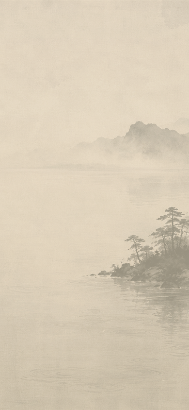
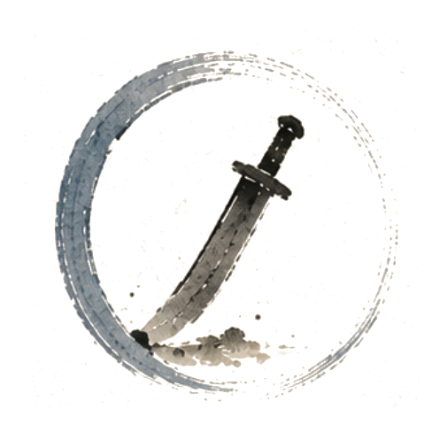
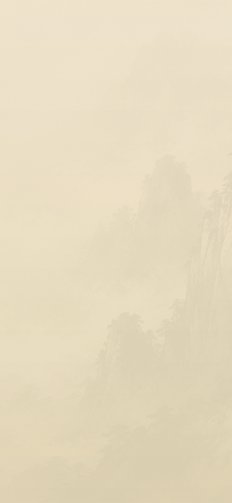
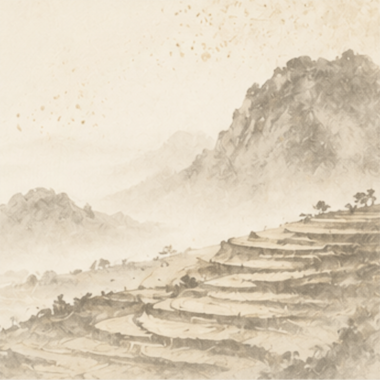
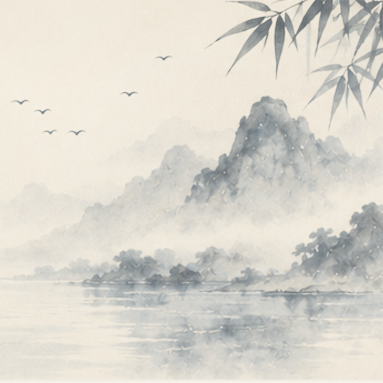
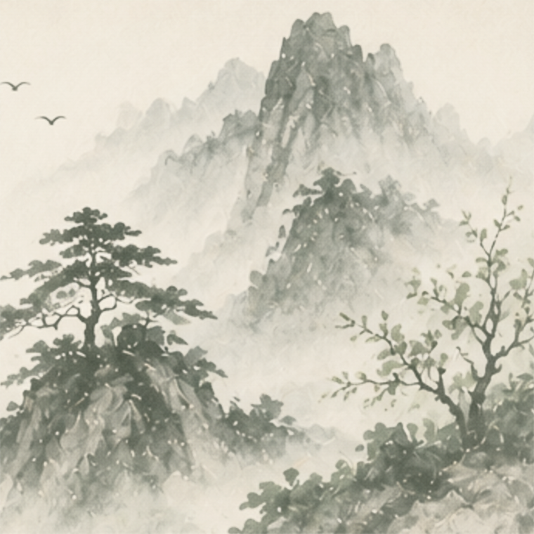
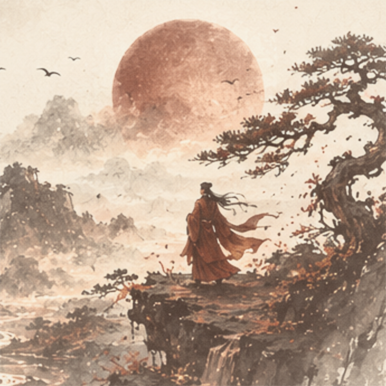

P1 · Beat 1 — The Naming (first run only)
A ceremonial object, not a card: the first image of their Elementum identity, composed to be screenshot — and reused as the share card (B5). No tab bar — the ceremony owns the screen.


9:41●●● ⌃ ▮
[ painted scene slot · blank until art pass ]
YOUR ELEMENTUM IDENTITY fixed

The Blade ≤3w
Precision before intention ≤5w
You say what others soften — and pay, quietly, for being the one who did.
10–16w · calligraphy line returns with bilingual pass
CAST FROM 1995 · 4 · 29 · YǑU HOUR 17–19
— ELEMENTUM —
fixed · no hour → HOUR UNSET
Plate total: 19 of ≤30 words. Ceremony over content — the full reading waits one tap away (P4). No category label on the face.
Identity-card pattern from the iconography guidance: seal hero → Cormorant name → Cinzel pinyin line → manifesto. Painted scene slot blank until the art pass.
Scene ink-blooms 1.4s (once art lands) → seal stamps (320ms, overshoot) → name fades → inscription writes L→R (800ms).
Hour-unknown variant: foundry mark renders 「CAST FROM 1995 · 4 · 29 · HOUR UNSET」 — see W·E below.
→
P2 · The Dissolve — three keyframes
Scroll-driven, reversible, zero intentional interaction. The seal is the continuity object — it shrinks and glides to become the wheel's center while the plate dissolves to the wheel ground. The tab bar arrives only when Beat 2 lands.
KF·1 · scroll 0% — plate at rest · ring peek
9:41●●● ⌃ ▮
YOUR ELEMENTUM IDENTITY
The Blade
Precision before intention
You say what others soften — and pay, quietly, for being the one who did.
CAST FROM 1995 · 4 · 29 · YǑU HOUR 17–19
— ELEMENTUM —
KF·2 · scroll ~50% — plate → silk · text exits up · seal shrinks & glides

9:41●●● ⌃ ▮
YOUR ELEMENTUM IDENTITY
The Blade
Precision before intention
You say what others soften — and pay, quietly, for being the one who did.
KF·3 · scroll 100% = Beat 2 — ring painted · nodes bloom · reading shelf + tab bar settle
9:41●●● ⌃ ▮
YOUR ENERGIES
The Blade
Lean on Earth — it feeds your edge. Watch what Fire costs you.
28%

EARTH · 28%ResistanceThe ground that feeds your edge.Stability · the centreRead
16%

WATER · 16%CatalystWhere your edge learns to flow.Flow · the descentRead
14%

WOOD · 14%CatalystWhat your blade is for.Growth · the upward pushRead
0%

FIRE · 0%Missing·CatalystThe forge you borrow, never own.Radiance · the rising heatReadThe seal you were named by becomes the axis of your five energies — "Reveal is the catalogue," literally. Same object, three scales: 124px → 102px → 84px.
The tab bar fades up with Beat 2 — the moment the wheel IS the Reading tab, the product chrome arrives with it (Reading active, seal dot). The catalogue shelf blooms beneath the ribbon — the dissolve lands directly on the canonical Beat 2 (P3, next).
The brush enso paints itself in clockwise (conic reveal). 2.5s dwell on the plate auto-nudges 12px. Reduced-motion: instant cross-fades.
→
P2 · Live — scrub the dissolve
Working demonstration of the transition. Scroll inside the phone: the plate dissolves, text exits, the seal glides to center, the brush ring paints in, nodes bloom, and the reading shelf settles in beneath. Fully reversible — exactly as shipped.
9:41●●● ⌃ ▮
YOUR ELEMENTUM IDENTITY
The Blade
Precision before intention
You say what others soften — and pay, quietly, for being the one who did.
CAST FROM 1995 · 4 · 29 · YǑU HOUR 17–19
— ELEMENTUM —
YOUR ENERGIES
The Blade
Metal rules clarity and judgment — your dominant force, the edge that cuts to what is true.
Each dot is an energy — tap to open its reading
28%
EARTH · 28%ResistanceThe ground that feeds your edge.Stability · the centreRead
16%
WATER · 16%CatalystWhere your edge learns to flow.Flow · the descentRead
14%
WOOD · 14%CatalystWhat your blade is for.Growth · the upward pushRead
0%
FIRE · 0%Missing·CatalystThe forge you borrow, never own.Radiance · the rising heatRead
scroll ⇣ inside the phone
Timing map — plate ground 4–42% · plate text 4–46% · seal glide 8–74% (ease-out) · enso paints in 44–70% · node bloom 52–98% staggered by presence · ribbon + reading shelf + tab bar 82–99%.
Demonstration only — production binds the same curves to the plate's scroll position.
→
P3 · Beat 2 — the wheel = the Reading catalogue (canonical · lands here from P2)
The core catalogue. The wheel maps your five energies; the shelf beneath holds all five as latched reading tiles. Tap a dot — its tile opens; tap a tile — its dot lifts. Five energies, five readings, one gesture connecting them.
9:41●●● ⌃ ▮
YOUR ENERGIES
Metal rules clarity and judgment — your dominant force, the edge that cuts to what is true.
Each dot is an energy — tap to open its reading
hook ≤8w verbatim · spine gauge ∝ presence · pole line teaches the five-energy idea
The shelf is the lesson. Five spines, always all five visible — like books on a shelf, one pulled out. The open spine carries the hook + art bleed + the pole line that names the energy ("Stability · the centre"); the four closed spines stay as thin marks with a percent and a presence gauge that fills to match the dot's size on the wheel. The encoding is taught twice — once round, once tall.
Wheel ⟷ shelf are latched, both ways. Tap a dot → its spine expands and takes the pigment cap + up-notch (pulled from the wheel); tap a spine → its dot scales up with a pigment ring. The shared element pigment is the visible tether — the user learns dot and tile are the same energy. Try it live: tap any dot or any spine.
The hook earns the tap; the Read pill commits it. A single tap opens the spine (browse, zero cost); the Read pill (or a second tap) flips to the full energy card — Earth → P6, Fire → P7. Persona payoff (The Alchemist, The General) waits there. Engine taxonomy never surfaces.